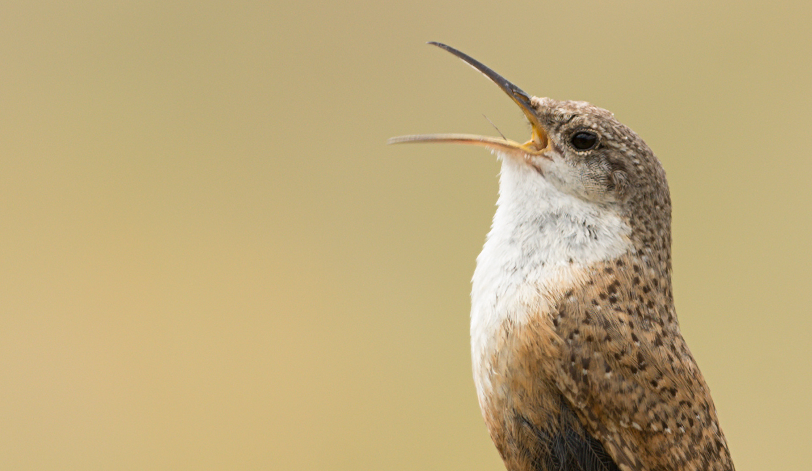
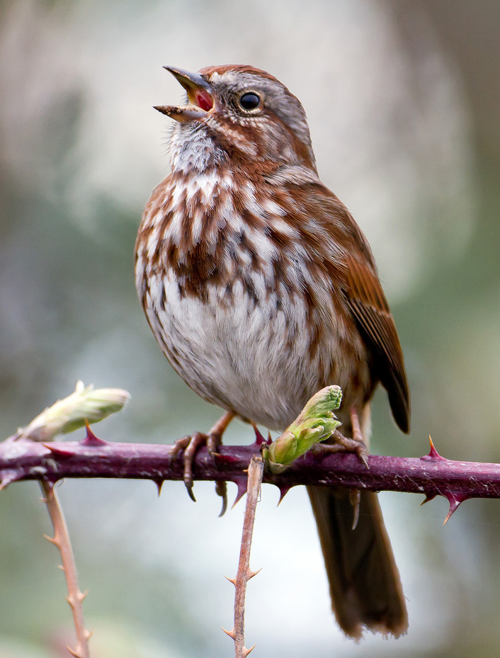
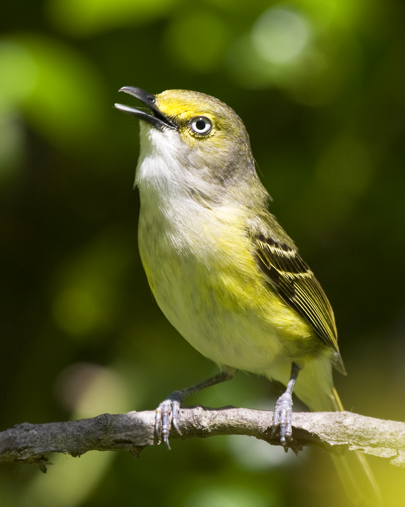

Why study female bird song?
Both females and males sing amazingly complex songs in many bird species, but females do not sing at all in others. Why is this? And how and why did songbirds evolve such elaborate songs?
To answer these questions, we need your help to document female bird songs from around the world!
Traditionally, bird song has been viewed as primarily a male trait and female song has been thought of as rare and anomalous. Research shows, however, that female song occurs in many songbird species. Also, it likely existed in the ancestors of all modern songbirds. So, female songbirds have been singing for millions of years. It’s time we start listening!
Bird song is a complex, elaborate trait, like extravagant displays and flashy colors of many animals. Therefore, bird songs offer an excellent opportunity to study the evolutionary pressures that have shaped life on our planet!
To investigate how males and females evolved their diverse songs, we need many examples of male and female song from many different songbirds. But female songs are almost absent in biological collections because most bird song research has focused on male song. By contributing observations and recordings, you are helping answer interesting and important evolutionary questions!
Participate now!
The majority of bird song research has been conducted in temperate climate regions – especially Europe and northern North America. Here, males sing a lot during the breeding season and female song is often reduced or absent. As a consequence, bird song research has focused on male song. However, most of the world’s biodiversity, including songbird biodiversity exists in the tropics. In the tropics, we see a very different pattern: song is common in both males and females. So how did all this bird song diversity evolve?
Many differences exist between tropical and temperate regions. However, extreme differences in seasonal patterns of temperature and resource abundance is one difference that has had pronounced effects on bird behavior. One consequence is that many temperate-breeding songbirds migrate, traveling annually between tropical wintering grounds and temperate breeding grounds.
Upon arriving to their breeding grounds, temperate male songbirds sing their hearts out to claim a territory and attract a mate. Females then choose males with the most elaborate songs. Based on these observations and a lot of experimental research, song in temperate males appears to be sexually selected to become more elaborate over evolutionary time.
In the tropics, however, many bird species live and breed in the same area year-round. They often keep the same mate and territory for the whole year, or even multiple years. Thus, tropical songbirds may sing for many additional socially or naturally selected reasons, such as to mediate social interactions necessary to maintain multipurpose territories or to ensure access to food all year.
So which selection pressures have led to the diversity of bird songs we see today? To understand this, we need songs for as many species as possible. Then we can compare differences in male and female song to a variety of ecological factors. Specifically, we can compare changes in male and female song structure to changes in potential key factors (while accounting for how songbird species are related). This will reveal which factors have shaped changes in bird song complexity throughout songbird evolutionary history.



The conspicuous red male and mostly brown female cardinal allows anyone to see that both females and males of this common backyard bird sing. Females particularly sing near the nest to communicate with males bringing food to chicks.
Females and males both sing, but their songs are slightly different. Males sing a ringing, clear cascade of descending notes; female song is buzzy and ascending.
This warbler duets. Male Adelaide’s Warblers frequently sing on their own, but periodically the female of a mated pair joins in to form a duet.
This wren is part of an avian family renowned for spectacular duets.
Alpine Accentors are one of the few songbirds in which females are known to sing to attract mates.
Both female and male Troupials can sing songs with simple alternating notes or more complex combinations of phrases. Both sexes may overlap their mate’s songs to form duets.
Female and male Magpie-lark songs are nearly identical and both sexes can sing the same songs. They also frequently duet.
Females and males have very similar songs and often overlap each other’s songs to duet.
Females and males of many fairy-wren species sing. The female’s song is remarkably similar to the male’s.